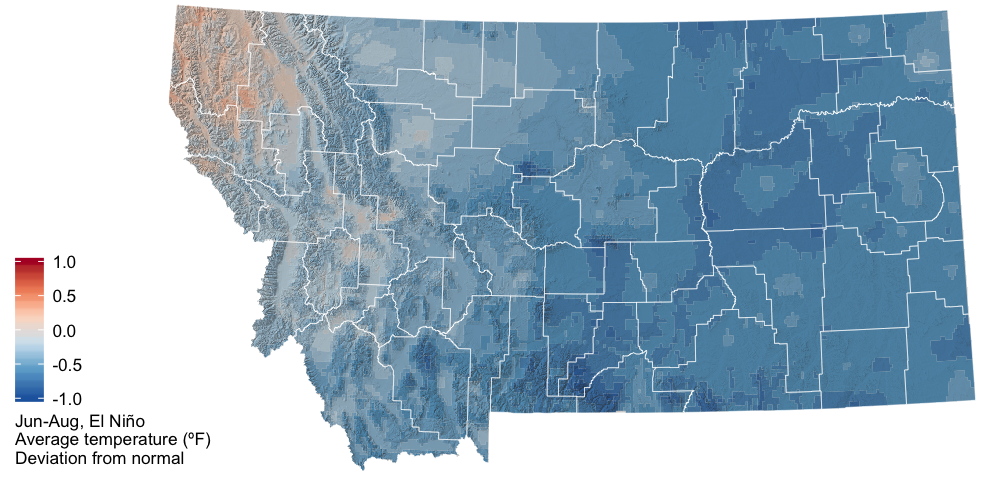
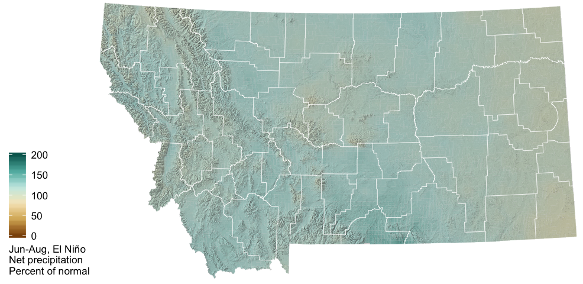
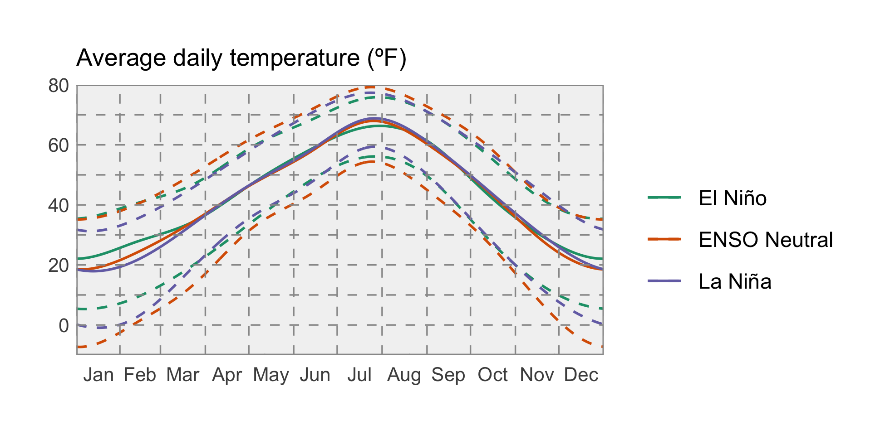
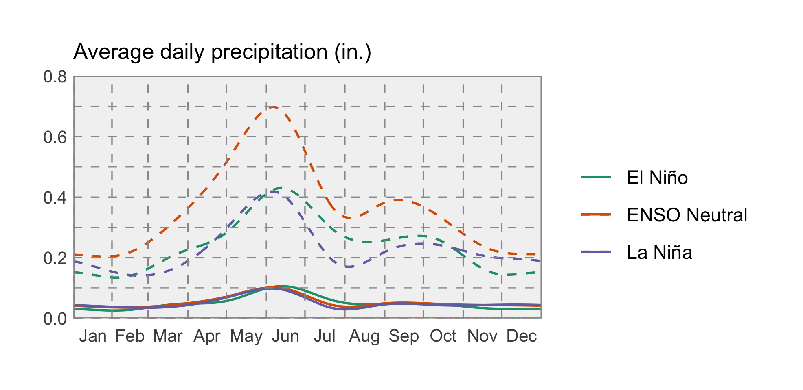
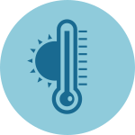
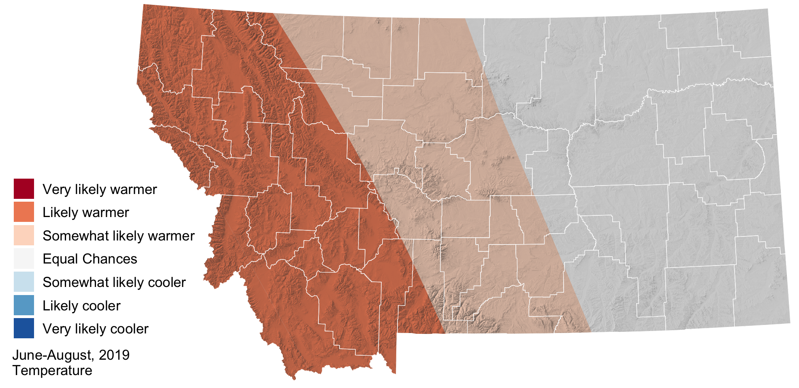
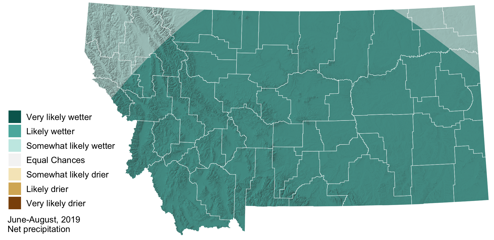

Summer 2019 Forecast
Late spring in Ninemile Valley. Cooler than normal temperatures and lots of precipitation has maintained snowpack across much of the northern Rockies. Photo: Ada Smith.
El Niño Update
The El Niño Southern Oscillation (ENSO) is a natural seasonal fluctuation in the sea surface temperature of the Pacific ocean near the equator. El Niño events have a strong influence on winter weather and a moderate influence on summer weather across Montana, and less of an influence during the rest of the year. Historically during an El Niño, June–August precipitation is slightly higher than normal, and temperature is generally cooler than normal. As you’ll see, the climate forcasts for the next few months generally reflect these patterns.
These maps show what an average El Niño April–June looks like relative to normal. Keep an eye on the NOAA ENSO outlook (https://www.climate.gov/enso) for the latest ENSO conditions and predictions as we head into late spring.

The two graphs below show how Montana as a whole is affected by the ENSO climate patterns. The solid lines represent the average conditions in each of El Niño, La Niña, and ENSO Neutral conditions (see the Reference section for an explanation of these conditions). The dashed lines represent the range of recorded conditions during the 1981–2010 period on any given day.

 Temperature
NOAA’s Climate Prediction Center (CPC) is projecting that temperatures will likely be warmer than normal across western Montana this summer, with equal chances of cooler or warmer temperatures over the rest of the state. Warmer temperatures may accelerate the arrival of drought conditions in western Montana.

 Precipitation
Precipitation
The CPC has increased its seasonal precipitation forecast across much of Montana to “likely wetter” conditions for this summer. Keep in mind that while the CPC is projecting wetter conditions, this map doesn’t reflect how much wetter is it likely to be, or the intensity of precipitation events.
